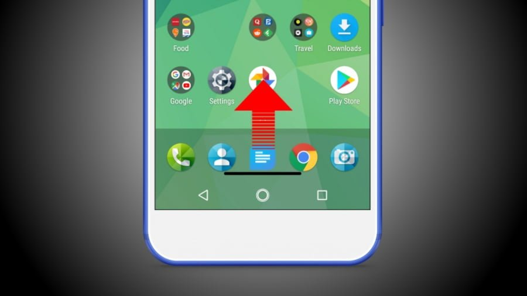

Zasada 7
Flexibility and efficiency of use
Angielski oryginał
Shortcuts — hidden from novice users — may speed up the interaction for the expert user so that the design can cater to both inexperienced and experienced users. Allow users to tailor frequent actions. Flexible processes can be carried out in different ways, so that people can pick whichever method works for them
Polskie tłumaczenie
System powinien umożliwiać zaawansowanym użytkownikom korzystanie ze skrótów i akceleratorów. Przyspiesza to nawigację i osiąganie celów, jednocześnie zachowując łatwość obsługi dla początkujących.

